COMSOL入门
COMSOL多物理场的工作流程¶
| 定义问题 | 初始化问题 | 几何 | 材料属性 | 边界条件 | 网格 | 求解 | 后处理 | 优化 |
|---|---|---|---|---|---|---|---|---|
| 定义需要 求解的问题 |
初始化模型 | 绘制或导入CAD | 定义求解域 | 设定边界条件 | 网格划分 | 求解 | 后处理和报告 | 优化修改 |
1 定义问题¶
例：热微执行器¶
- 问题描述：
- 在执行器一段施加电压
- 电流生成热
- 结构发生膨胀
- 最终求解温度、变形、应力
多物理场：电+热+结构力学
建模难点在于如何反向简化模型
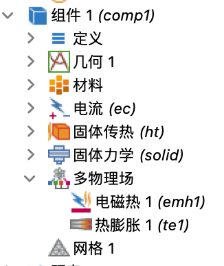
定义问题逻辑¶
| 定义分析目标 | 几何维度 | 确定所需物理场 | 确定多物理场耦合 |
|---|---|---|---|
| 获得执行器通电后的热变形情况 | 三维 | 电流 固体传热 固体力学 |
电磁热 热膨胀 |
2 几何建模¶
几何体素¶
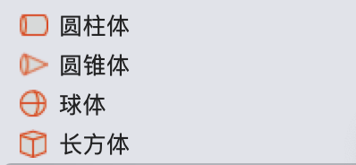
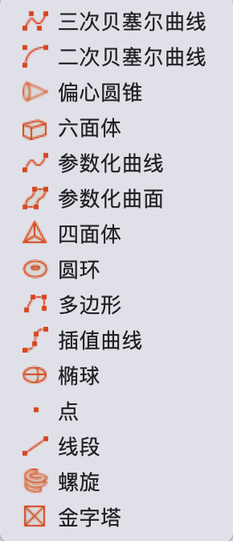
每个对象包含“域”、“边界”、“边”、“点”属性，对任意一个几何体素进行变换操作时，都要选中对应的域/边界/边/点进行操作，同时要注意操作的结果是否符合逻辑
几何操作¶
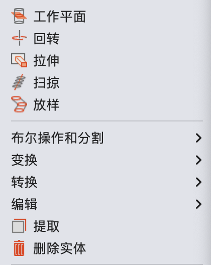
阵列¶
用于在x,y,z方向上生成相同的几何体素，快速构建零部件
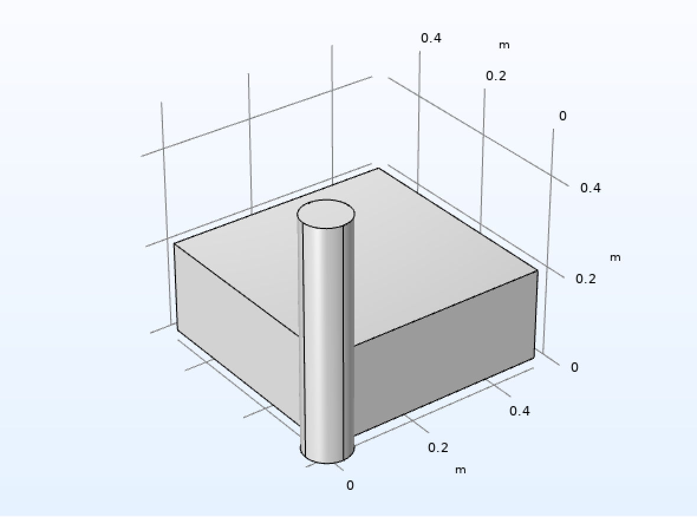
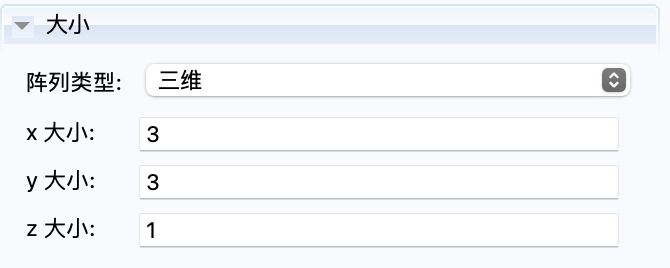
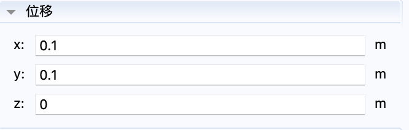
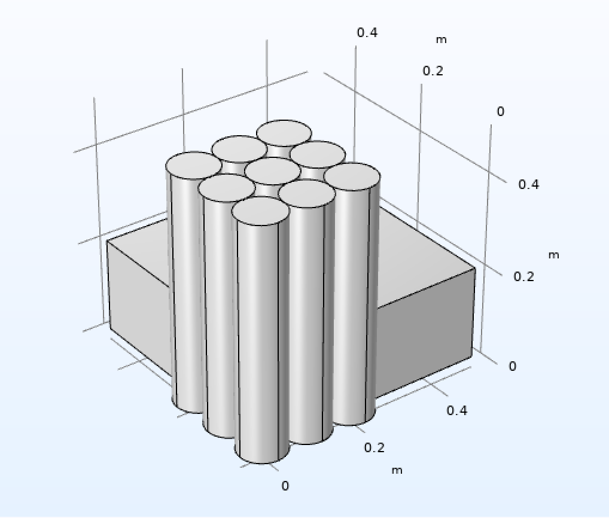
移动¶
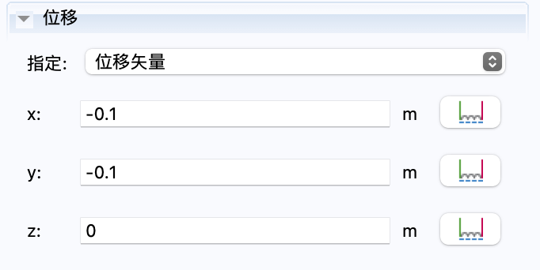
布尔操作¶
- 并集
- 交集
- 差集
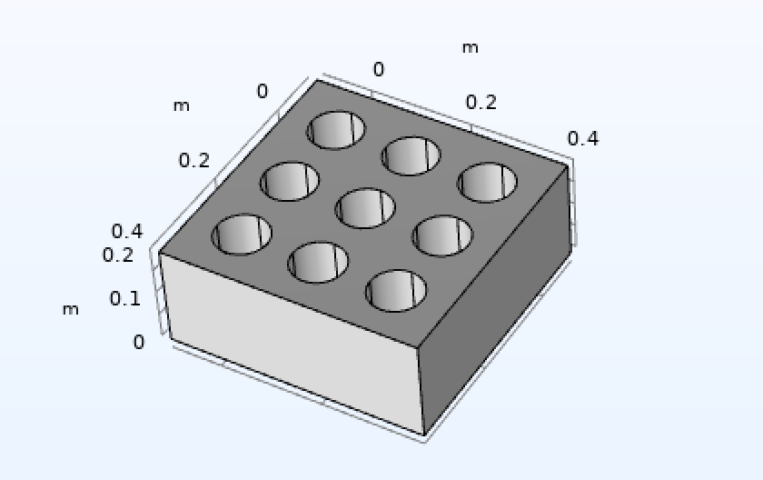
工作平面¶
可以选取平面绘制二维图像，方便进行变换操作（拉伸，旋转等）
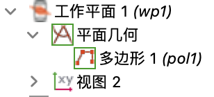
几何模型定义的逻辑¶
几何体素的定义>>变换操作>>逻辑操作
3 CFD接口¶
单相流¶
使用雷诺数确定流型¶
\[Re_L=\frac{\rho UL}{\mu}=\frac{惯性力}{粘性力}\]
- 低雷诺数(<<1)：蠕动流
- 粘性力阻碍了所有流体脉动的产生
- 可逆的平滑流型
- 中等雷诺数(~1-2000)：层流
- 惯性力重要性增加
- 粘性力被限制在边界层、剪切层、尾迹内部
- 规则、平滑流型
- 高雷诺数(>4000)：湍流
雷诺数计算¶
- 平板流 \(Re_x=\frac{Ux}{\nu}\)
- 圆球扰流 \(Re_L=\frac{UL}{\nu}\)
- 管流 \(Re_{Dh}=\frac{UD_h}{\nu}\quad D_h=\frac{4A(横截面积)}{P(周长)}\)
- 圆管流 \(Re_D=\frac{UD}{\nu}\)
马赫数¶
\[Ma=\frac{|u|}{a}=\frac{流速}{音速}\]
- \(Ma=0\):正规的不可压缩流动
- 音速无限大（假设），扰动瞬时传播
- 抛物型Navier-Stokes方程
- \(0<Ma<0.3\):“弱”可压缩流动
- 小和中等梯度亚音速流
- 密度变化不超过5%
层流¶
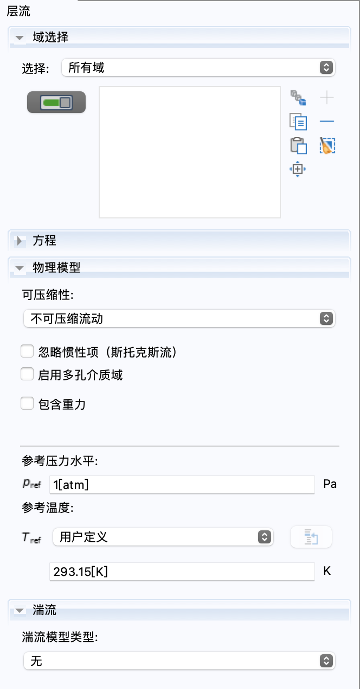
- 求解NS方程
- 针对低雷诺数情况
- 瞬态或稳态求解器
- 不可压缩或可压缩（\(Ma<0.3\)）
- 可以切换到湍流模型
- 可以切换至蠕动流
- 忽略惯性项
- 定义参考压力水平（默认为:\(1[atm]\)）
流动压力¶
- 压力驱动流体运动
- NS方程只计算压力梯度，不计算绝对值
- 需要使用绝对压力材料属性
- 两种方法计算压力：
- \(\Delta p - p_A\)，直接求解绝对压力
- 管道流、高马赫流
- \(\Delta p << p_A\)，求解绝对压力\(p_A=p_{ref}+p\)
- \(\Delta p - p_A\)，直接求解绝对压力
流体属性¶
- 密度
- 动力粘性
- 牛顿流体：应力正比于应变
- 非牛顿流体
初始值¶
稳态：初始值=数值上的初始猜测 - 进作为迭代的起始点，没有物理意义 - 边界条件不需要与初始值一致
顺态：初始值=物理上的初始状态 - 顺态问题t0时刻的物理解 - 所有边界条件必须与初始值必须一致 - 流程： - 使用收敛的稳态解作为初始值 - 使用常规初始值（零速度、零压力）和边界条件
进出口条件的组合¶
- 适定条件
- 速度进口，压力出口
- 压力进口，速度出口
- “稍有难度”条件：
- 压力进口，压力出口
- 病态条件
- 速度进口，速度出口
充分发展的流动¶
- 定义了一个虚拟区域的长度，进口特征长度的10倍，让流体先进行一段流动
- 可以在任意形状的进出口定义层流/湍流的速度分布
- 与“内部壁”冲突
出口位置¶
- 如果在出口附近存在特定的流动结构（尾迹、回流），需要将出口延长至完全包含该流动结构
壁边界条件¶
- 滑移
- 法向速度为0
- \(u\cdot n=0\)
- 无滑移
- 壁上速度为0
- \(u=0\)
- 滑动壁
- 指定切向速度
- \(u=u_{w,proj}\)
- 移动壁
- 指定壁运动速度
- \(u=u_w\)
- 渗漏壁
- 流体渗漏进或通过多孔壁离开求解域
内部壁¶
- 使用内部壁结构可以避免对薄结构进行网格划分
对称、轴对称和周期性¶
- 极大减小内存需求和计算时间
- 流场和几何必须为对称/轴对称/周期性
流量控制装置¶
- 将装置作为边界而非域的一部分
- 压力边界
- 风扇和格栅可以作为出口和入口
- 真空泵为出口
- 内部风扇和滤网作为内部边界
压力点约束¶
- 如果没有边界条件限定系统压力，需要使用其他方式来限定
- 当考虑重力时，出口压力不能设为常数
- 要考虑静水压力的影响
冲突的边界条件¶
- 入口与出口相邻
- 同时指定入口和出口速度
- 边界条件与载荷冲突